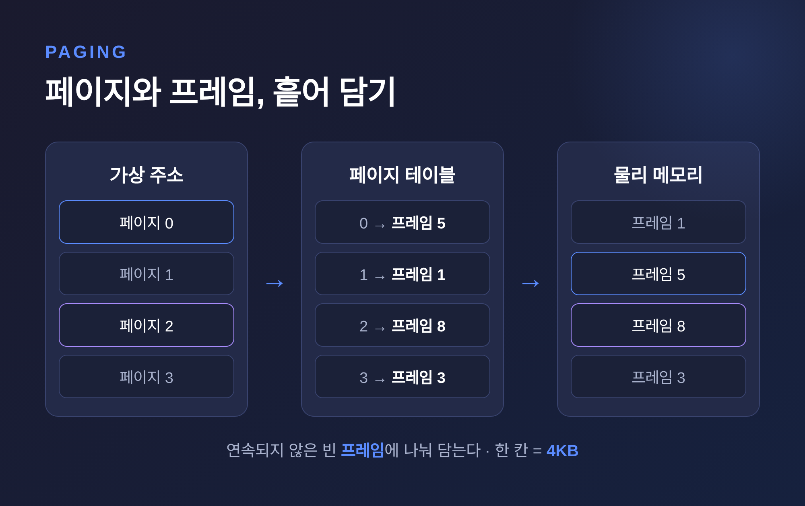
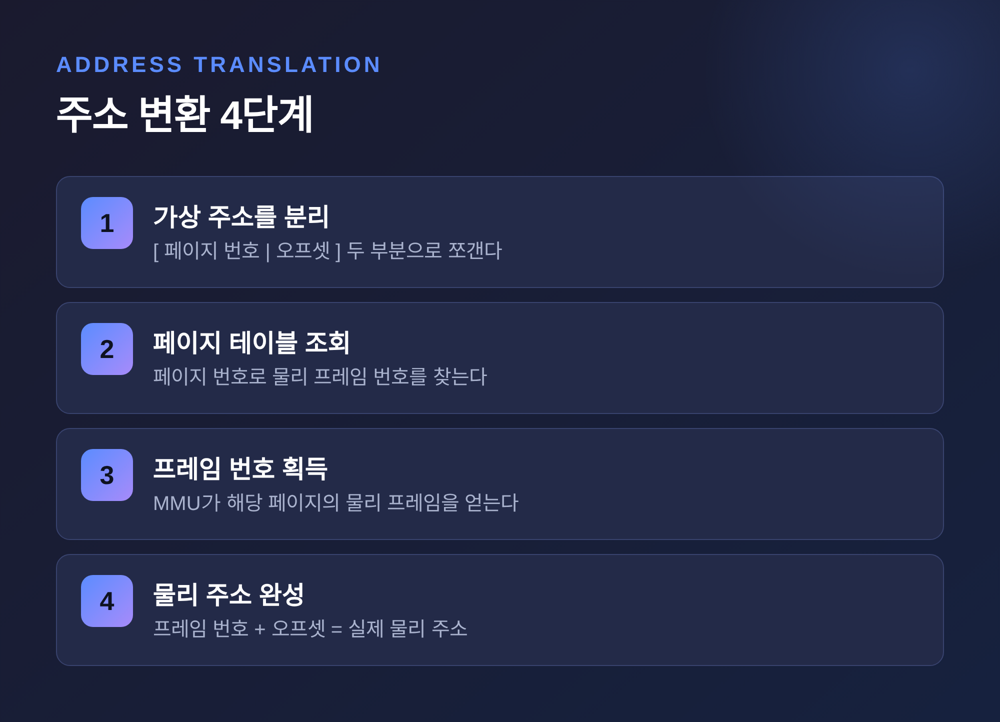
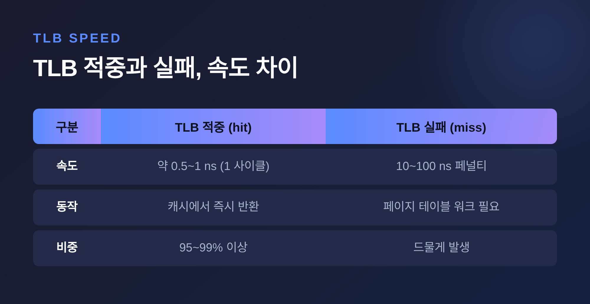
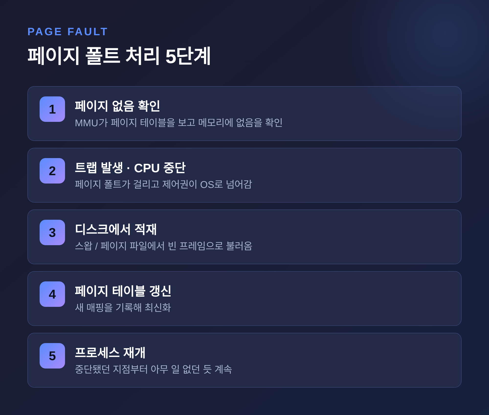
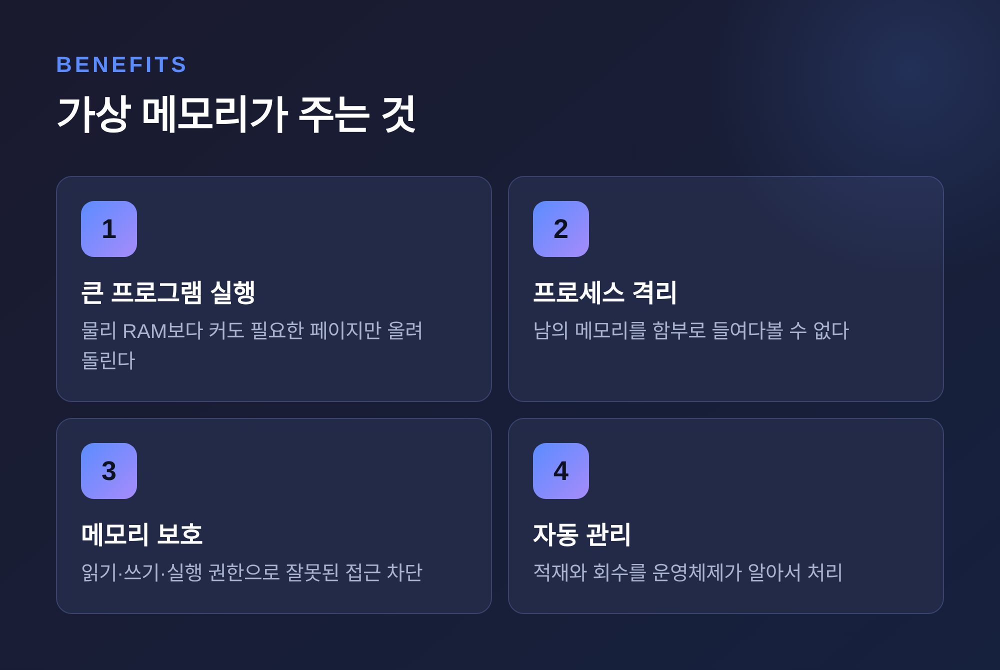

가상 메모리와 페이징 원리, 물리 RAM보다 크게 일하는 컴퓨터
이번 글에서는 가상 메모리와 페이징이 어떤 원리로 동작하는지 정리해 보겠습니다.
컴퓨터에 RAM이 8GB뿐인데, 그보다 큰 프로그램이 어떻게 실행될까요. 답은 하나로 요약됩니다. 컴퓨터는 물리 메모리를 그대로 쓰지 않고, "가상의 메모리"라는 착시를 만들어 그 위에서 일합니다. 그 착시를 떠받치는 두 기둥이 가상 메모리와 페이징입니다.
프로그램은 메모리를 혼자 쓴다고 착각한다
먼저 가상 메모리의 정의부터 짚겠습니다.
가상 메모리는 각 프로그램에게 물리 RAM 용량을 넘어설 수 있는 독립된 주소 공간을 나눠주는 기술입니다. 보조 저장장치인 디스크나 SSD를 주기억장치처럼 빌려 써서, 프로그램이 실제 RAM보다 커도 실행되게 만듭니다.
핵심은 착각입니다.
모든 프로그램은 자신이 메모리를 통째로 혼자 쓰는 것처럼 느낍니다. 하지만 실제로는 운영체제와 하드웨어가 뒤에서 물리 메모리 조각과 디스크를 조합해 그 환상을 만들어냅니다.
이 기술이 등장한 이유는 단순합니다. RAM은 비싸고 디스크는 쌉니다. 한정된 RAM 안에 최대한 많은 프로그램을 올려 효율적으로 돌리려면, 부족한 부분을 값싼 저장장치로 메울 방법이 필요했습니다.
놀랍게도 이 아이디어는 새롭지 않습니다. 1962년, 영국 맨체스터 대학의 톰 킬번(Tom Kilburn) 팀이 아틀라스(Atlas) 컴퓨터에서 처음 구현했습니다. 작고 빠른 메모리와 크고 느린 드럼 저장장치 사이의 데이터 이동을 자동화해, 사용자에게 "아주 큰 메모리를 가진 듯한 착각"을 준 것이 시초로 기록됩니다. 지금 우리가 쓰는 원리의 뼈대가 60여 년 전에 이미 세워졌던 셈입니다.
페이지와 프레임, 메모리를 조각으로 나누다
가상 메모리를 실제로 구현하는 방식이 페이징(paging)입니다.
원리는 이렇습니다. 가상 주소 공간을 고정 크기의 조각으로 자릅니다. 이 조각을 페이지(page)라고 부릅니다. 물리 메모리도 같은 크기의 조각으로 자릅니다. 이쪽은 프레임(frame)이라고 부릅니다.
표준 페이지 크기는 4KB, 즉 4096바이트입니다.
그리고 "어느 페이지가 어느 프레임에 들어가 있는지"를 기록한 표를 둡니다. 이것이 페이지 테이블(page table)입니다.

이 방식의 장점은 분명합니다.
예전 방식은 프로그램에게 이어진 메모리 공간을 통째로 내줘야 했습니다. 지금은 다릅니다. 조각으로 나눴기 때문에, 여기저기 흩어진 빈 프레임에 페이지를 나눠 담을 수 있습니다. 메모리가 조금씩 비어 있어도 알뜰하게 활용됩니다.
가상 주소는 두 부분으로 나뉩니다. 앞쪽은 페이지 번호, 뒤쪽은 페이지 안에서의 위치를 가리키는 오프셋(offset)입니다. 페이지가 4KB이므로 하위 12비트가 오프셋을 맡습니다. 2의 12제곱이 정확히 4096이기 때문입니다.
MMU와 주소 변환, 매 순간 일어나는 통역
프로그램이 쓰는 가상 주소는 실제 물리 주소와 다릅니다. 그래서 둘 사이를 통역하는 장치가 필요합니다.
그 역할을 CPU 안의 MMU(Memory Management Unit)가 맡습니다. 모든 메모리 접근은 예외 없이 MMU를 거칩니다.
변환 과정은 네 단계입니다.

여기서 역할 분담이 중요합니다. 하드웨어인 MMU는 빠른 변환을 담당합니다. 소프트웨어인 운영체제는 페이지 테이블을 만들고 갱신하는 관리를 맡습니다. 이 둘의 협업이 가상 메모리의 심장입니다.
문제는 테이블의 크기입니다. 요즘 CPU가 쓰는 64비트 환경에서 주소 공간은 어마어마하게 넓습니다. 이걸 하나의 평평한 표로 만들면 표 자체가 감당 못 할 만큼 커집니다.
그래서 표를 여러 층으로 쪼갭니다. 다단계 페이지 테이블(multi-level page table)입니다.
x86-64 CPU의 기본은 4단계 페이지 테이블에 48비트 가상 주소입니다. 48비트를 9, 9, 9, 9, 12비트로 나눕니다. 앞의 네 개의 9비트가 각 층의 색인이 되고, 마지막 12비트가 오프셋입니다. 주소를 변환할 때는 이 네 층을 위에서 아래로 차례로 걸어 내려갑니다. 이 과정을 "페이지 테이블 워크(page table walk)"라고 부릅니다.
다단계로 나눈 덕분에, 실제로 쓰는 영역에 해당하는 하위 표만 만들면 됩니다. 메모리를 크게 아낄 수 있습니다.
TLB, 200배 느린 길을 우회하는 지름길
여기서 성능 문제가 하나 생깁니다.
네 층을 걷는다는 것은, 주소 하나를 변환하려고 메모리에 최대 네 번 접근한다는 뜻입니다. 게다가 MMU가 물리 주소를 확인하러 메모리에 다녀오는 시간은 CPU가 내부 레지스터를 다루는 시간에 비하면 약 200배 느립니다.
매번 이 길을 걷는다면 컴퓨터는 주소 변환만 하다 하루가 갑니다.
그래서 지름길을 둡니다. TLB(Translation Lookaside Buffer)입니다.
TLB는 MMU 안에 있는 아주 빠른 캐시입니다. 최근에 변환한 "페이지 번호 → 프레임 번호" 결과를 저장해 둡니다. 다음에 같은 페이지를 찾으면 표를 걷지 않고 여기서 즉시 답을 꺼냅니다.
효과는 수치로 뚜렷합니다.

TLB 적중은 약 0.5에서 1나노초, 사실상 한 사이클이면 끝납니다. 반면 TLB 실패는 페이지 테이블을 걸어야 하므로 10에서 100나노초의 페널티가 붙습니다.
그런데 실제 적중률이 놀랍습니다. 통상 95%에서 99% 이상입니다.
비결은 지역성(locality)입니다. 4KB 페이지는 생각보다 넉넉합니다. 변수 몇 개를 다루는 동안에도 수백 번의 명령이 같은 페이지 안에 머무는 경우가 많습니다. 그래서 한 번 변환해 둔 결과가 계속 재사용됩니다.
정리하면 이렇습니다. 대부분의 접근은 TLB에서 즉시 해결됩니다. 가끔 실패할 때만 느린 길로 내려갑니다. 이 구조 덕분에 가상 메모리의 변환 비용이 실사용에서는 거의 느껴지지 않습니다.
페이지 폴트, 없는 페이지를 불러오는 순간
이제 이 글의 핵심 질문으로 돌아갑니다. 컴퓨터는 어떻게 물리 메모리보다 크게 일할까요.
답은 페이지 폴트(page fault)에 있습니다.
프로그램 전체를 처음부터 메모리에 올리지 않는 것이 요령입니다. 실제로 접근하는 페이지만 그때그때 올립니다. 이것을 요구 페이징(demand paging)이라고 합니다. 앞서 언급한 아틀라스가 최초로 구현한 방식이기도 합니다.
그러다 아직 메모리에 없는 페이지를 건드리면, 그 순간 페이지 폴트가 일어납니다.

흐름은 다섯 단계입니다.
먼저 MMU가 페이지 테이블을 보고 해당 페이지가 메모리에 없다는 것을 확인합니다. 그러면 페이지 폴트 트랩이 걸리고 CPU 동작이 멈춥니다. 제어권을 넘겨받은 운영체제가 디스크에서 그 페이지를 찾아 비어 있는 프레임에 올립니다. 페이지 테이블을 갱신합니다. 그리고 멈췄던 자리부터 프로그램을 다시 시작합니다.
프로그램 입장에서는 아무 일도 없었던 것처럼 계속 실행됩니다.
바로 이 자동 불러오기 덕분에, 물리 RAM보다 훨씬 큰 프로그램도 필요한 부분만 오가며 돌아갑니다. 빈 프레임이 없으면 어떻게 할까요. 이미 올라와 있던 페이지 중 하나를 골라 디스크로 내보내고 그 자리를 씁니다. 그 "고르는 규칙"이 페이지 교체 알고리즘입니다.
대표적인 세 가지가 있습니다. 가장 먼저 들어온 페이지를 내보내는 FIFO, 가장 오래 안 쓰인 페이지를 내보내는 LRU, 그리고 LRU를 가볍게 흉내 내면서도 구현이 간단해 실제 운영체제가 즐겨 쓰는 클럭(Clock) 방식입니다.
공짜는 아니다 — 스래싱이라는 함정
여기까지만 보면 가상 메모리는 마법 같습니다. 하지만 한계도 분명히 있습니다.
디스크는 RAM보다 압도적으로 느립니다. 페이지를 부지런히 넣고 빼는 일이 지나치게 잦아지면, 시스템은 정작 계산은 못 하고 디스크 입출력만 반복합니다.
이 상태를 스래싱(thrashing)이라고 합니다.
한 프로세스가 잠깐 돌다 페이지를 요구하고, 그러면 다른 프로세스가 돌다 또 페이지를 요구하고, 이 악순환이 이어집니다. 겉으로는 컴퓨터가 멈춘 듯 느려집니다. RAM이 부족할 때 화면이 답답하게 굳는 그 현상의 정체가 대개 이것입니다.
운영체제는 스래싱이 감지되면 일부 프로세스를 중단하거나 종료해 메모리 압박을 풉니다.
교훈은 하나입니다. 가상 메모리는 물리 메모리보다 크게 일하게 해주지만, 그 확장은 공짜가 아닙니다. 값싼 디스크에 지나치게 기대면 성능이 무너집니다.
이 디스크 공간에는 이름이 있습니다. 리눅스에서는 스왑(swap), 윈도우에서는 페이지 파일(pagefile.sys)이라 부릅니다. 리눅스는 RAM이 정말 부족할 때만 보수적으로 스왑을 쓰는 편이고, 윈도우는 페이지 파일을 좀 더 적극적으로 활용합니다.
결국 무엇을 얻는가
가상 메모리가 우리에게 주는 것을 정리해 두겠습니다.

첫째, 물리 RAM보다 큰 프로그램을 돌릴 수 있습니다. 필요한 페이지만 올리기 때문입니다.
둘째, 프로세스 격리입니다. 각 프로그램은 자신의 페이지 테이블에 연결된 프레임만 볼 수 있습니다. 한 프로그램이 다른 프로그램의 메모리를 함부로 들여다볼 수 없습니다. "완전에 가까운 격리"라 불립니다.
셋째, 메모리 보호입니다. 이 격리는 운영체제 보안의 토대가 됩니다. 페이지마다 읽기, 쓰기, 실행 권한을 걸어 잘못된 접근을 막습니다.
넷째, 여러 프로그램을 빠르게 오가며 실행하는 멀티프로그래밍이 가능해지고, 이 모든 관리를 사용자가 신경 쓰지 않아도 운영체제가 알아서 처리합니다.
정리하면 이렇습니다.
가상 메모리와 페이징은 "메모리를 조각내고, 필요한 조각만 그때그때 불러온다"는 단순한 발상에서 출발합니다. 페이지와 프레임으로 나누고, MMU와 TLB로 빠르게 통역하고, 페이지 폴트로 부족한 부분을 디스크에서 메워옵니다.
— 컴퓨터가 가진 것보다 크게 일하는 비결은, 결국 잘 짜인 착각을 관리하는 기술입니다.
RAM이 부족하다고 느껴질 때, 그 뒤에서 얼마나 정교한 통역과 불러오기가 조용히 돌고 있는지 한 번쯤 떠올려 보시면 좋겠습니다.
#가상메모리 #페이징 #페이지테이블 #MMU #TLB #페이지폴트 #운영체제 #컴퓨터원리 #메모리관리 #IT지식
</content>